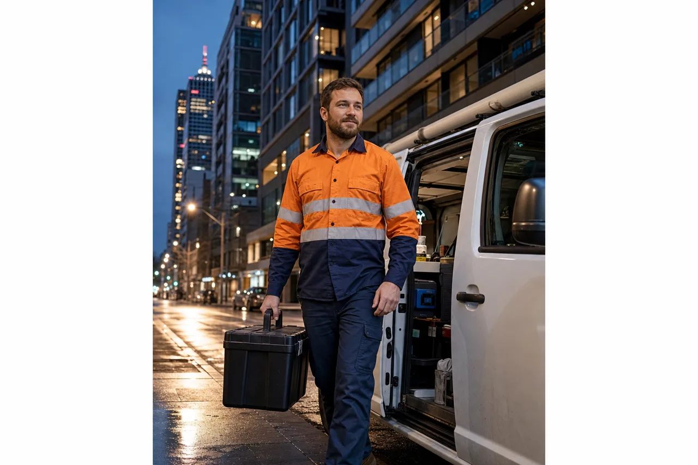

Emergency Plumber in Melbourne CBD
Burst pipe, blocked drain or gas smell in the CBD? A licensed local plumber is typically on-site within 40–50 minutes — apartments, offices and retail, any time, day or night.

24/7 emergency plumbing in Melbourne CBD
We dispatch the nearest fully-stocked van to Melbourne CBD as soon as you call — most jobs are on-site within 40–50 minutes, including after hours and on public holidays.
Melbourne CBD plumbing is a different challenge from suburban homes. High-rise apartments on Collins Street and Queen Street rely on shared risers and stack drains — one blocked line can affect multiple floors. Heritage laneway tenancies off Flinders Lane hide ageing copper and cast-iron pipes. Retail and hospitality on Bourke Street and Swanston Street need fast fixes with minimal downtime. Our CBD plumbers know these building types and arrive with the right gear.
Whether you're in a residential tower near Federation Square, a commercial suite on Elizabeth Street, or a basement plant room off King Street, you get the same upfront fixed quote before work starts — no surprise call-out fees.
Services we offer in Melbourne CBD
Fast, permanent fixes for the problems that can't wait — handled by licensed local plumbers across postcode 3000.
Blocked drains
High-pressure jet clearing for blocked sinks, toilets, stormwater and sewer lines in CBD apartments, offices and retail.
Learn moreBurst & leaking pipes
Fast leak detection and repair to stop water damage in high-rises, laneway tenancies and commercial fit-outs.
Learn moreHot water systems
Same-day repair and replacement for gas, electric and heat-pump units across Melbourne CBD buildings.
Learn moreGas leaks & fitting
Licensed gas fitters for leaks, smells and appliance connections — act fast if you smell gas.
Learn moreBlocked toilets
Overflowing or blocked toilets fixed fast, with parts on the van for most CBD properties.
Learn moreRoof & storm leaks
Emergency roof plumbing and stormwater fixes for CBD heritage rooftops and plant rooms.
Learn moreAreas & streets we cover in Melbourne CBD
We service the full 3000 postcode and the Hoddle Grid.
- Collins & Bourke Streets
Financial district towers, retail and hospitality from Spring Street to Spencer Street.
- Swanston & Elizabeth Streets
Residential apartments, student accommodation and mixed-use buildings.
- Flinders Street & Federation Square
Heritage buildings, laneway tenancies and riverside apartments.
- King & Queen Streets
Commercial offices, basement plant rooms and late-night retail.
Also nearby: South Melbourne, Port Melbourne and Inner City Melbourne. See all areas we cover.
Emergency plumbing response in Melbourne CBD
| Situation | Typical response | Available |
|---|---|---|
| Burst pipe / major leak | 40–50 min | 24/7 |
| Blocked drain / toilet overflow | 40–50 min | 24/7 |
| Gas smell / suspected leak | Priority dispatch | 24/7 |
| No hot water (apartment / office) | Same day | 24/7 |
Why Melbourne CBD locals call us
City residents, building managers and business owners choose us when speed, fair pricing and licensed workmanship matter most.
Call [TELEFONE]- Fast to postcode 3000
Central dispatch — typically the quickest response in our service area.
- Upfront fixed pricing
You approve the price before we start. No hidden call-out surprises.
- VBA licensed & insured
Fully licensed Melbourne plumbers and gas fitters — Lic. [LICENCA].
- High-rise & commercial experience
Shared stacks, plant rooms, after-hours access and building manager coordination.
- Fully-stocked vans
Most CBD jobs finished in one visit, with parts on board.
What Melbourne CBD residents say
"Sewer stack blocked on the 14th floor of our Collins Street building at 10pm. They coordinated with the concierge, cleared it fast and left the common areas spotless."
"Burst pipe in our Flinders Lane café before the morning rush. Plumber was there in under an hour, fixed it properly and we opened on time. Fixed price, no drama."
Related plumbing advice
What counts as a real plumbing emergency?
Some problems can wait until morning — others can't. How to tell the difference.
Read guide7 questions to ask before you book
Licensed, 24/7, local and upfront pricing — what to check before you hire.
Read guideHow to turn off your water mains
Stopping the water fast limits the damage. Find your stop tap before you need it.
Read guideNeed a plumber now? Call [TELEFONE] or see our Melbourne emergency plumber home page.
Frequently asked questions — Melbourne CBD
How fast can you reach Melbourne CBD?
Our emergency plumbers are typically on-site in Melbourne CBD within 40–50 minutes of your call, 24 hours a day, including weekends and public holidays.
Do you cover all of Melbourne CBD (3000)?
Yes. We cover the full Melbourne CBD postcode 3000, including Collins Street, Bourke Street, Swanston Street, Flinders Street and the Hoddle Grid.
Do you work in CBD apartment and office buildings?
Yes. We regularly attend high-rise apartments, commercial tenancies and retail premises in the CBD, coordinating with building managers and after-hours access when required.
How much does an emergency plumber cost in Melbourne CBD?
We provide upfront, fixed pricing before any work begins — no hidden call-out surprises. The final cost depends on the job type and time of day; you approve the price before we start.
Are your Melbourne CBD plumbers licensed?
Yes. All work is carried out by fully licensed (VBA) and insured Melbourne plumbers, with workmanship guaranteed.